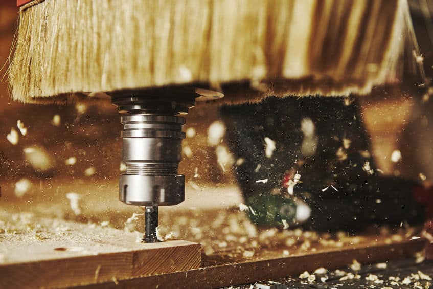

Proiectare
Cu ajutorul softwareului CAD avem posibilitatea de a realiza produse de inalta fidelitate care vor fi mai departe realizate din material lemnos. Un element esential al productiei personalizate este ca proiectarea asistata de calculator (CAD) va permite sa examinati si sa modificati piesele dorite pana la cel mai mic detaliu inainte de fabricatie prin adaugarea sau eliminarea anumitor detalii.
Care sunt avantajele proiectarii asistate de calculator (CAD)?
- controlul pre-fabricare a proiectului (puteti vizualiza, corecta sau modifica)
- faciliteaza depozitarea datelor, transferul, reproducerea si gestionarea documentelor
- se adapteaza la orice nevoi, indiferent de tipul de afacere
Prelucrare cu CNC 5 axe
Pentru clienti, persoane juridice sau fizice, profesionisti sau amatori, interesati in a obtine rapid obiecte unicat, prototipuri sau de serie de dimenisiuni precise si la o calitate superioara, efectuam urmatorele operatii de prelucrare cu CNC in 5 axe:
- debitare
- frezare 2d (decupare pe contur)
- frezare 3d (spatiala, volumetrica)

Prelucrare lemn masiv
Executam la comanda urmatoarele tipuri de produse:
- Scari interioare din lemn masiv
- Placari scari cu lemn masiv
- Pergole
- Copertine auto
- Usi si ferestre din lemn stratificat
- Panouri decorative
